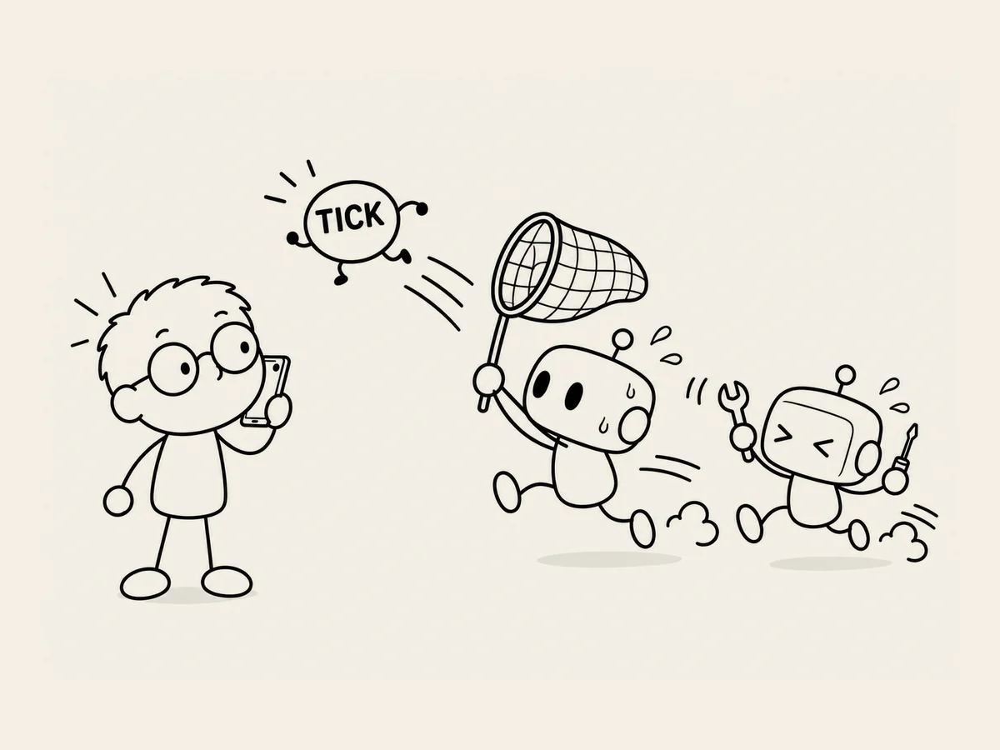

23.
I Spent a Whole Day Chasing One Tiny Noise.
I was testing the site on my computer.
The lullaby played properly.
The noise played properly.
The screen moved properly.
Done.
This time, I opened it on my phone.
Play.
Huh?
Something sounded strange.
A tiny sound.
Tick.
I listened again.
Tick.
It was fine on the PC, but I could hear it on the phone.
"Why is it doing this?"
ChatGPT and Codex started looking for the cause.
Was there something wrong with the audio file itself?
Was it happening when the three-minute audio looped?
Was it caused by the part where the volume gradually faded down?
Was it the way the audio was being played?
We checked them one by one.
I listened on my phone again.
Tick.
Another fix.
Listen again.
Nothing.
Did we finally get it?
I listened several more times.
It seemed fine.
Done.
What a relief.
I left the music playing on my phone and pressed Back.
Tick.
Ah.
Not again.
